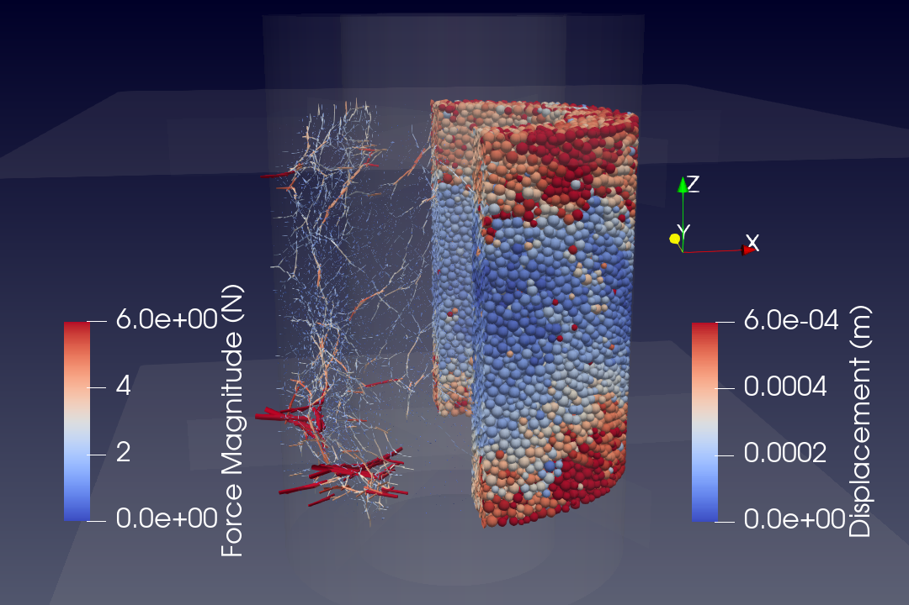
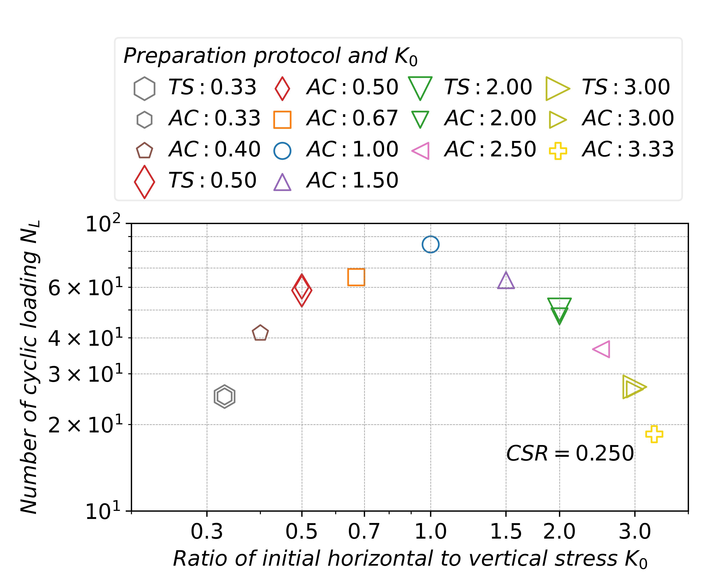
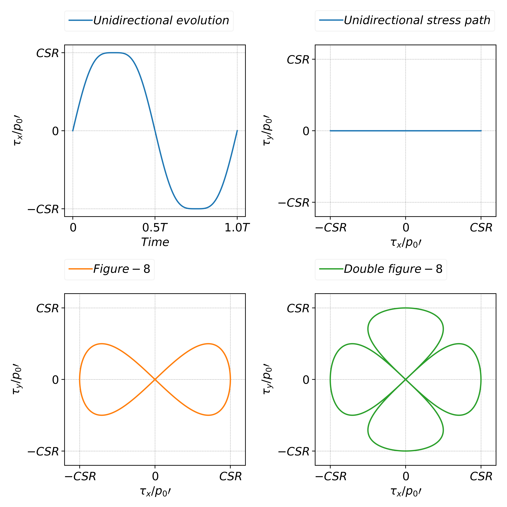
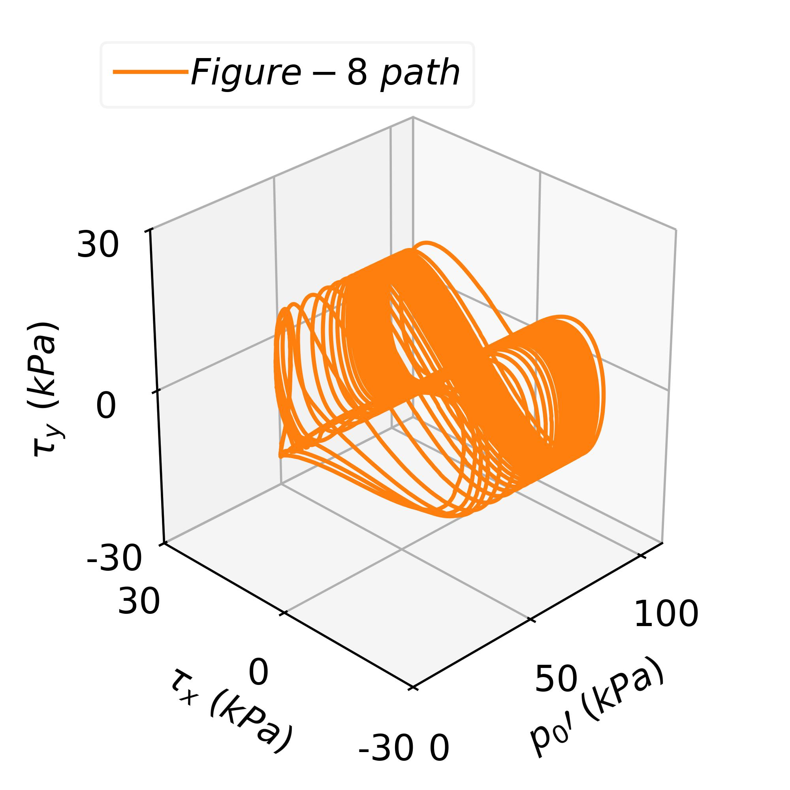
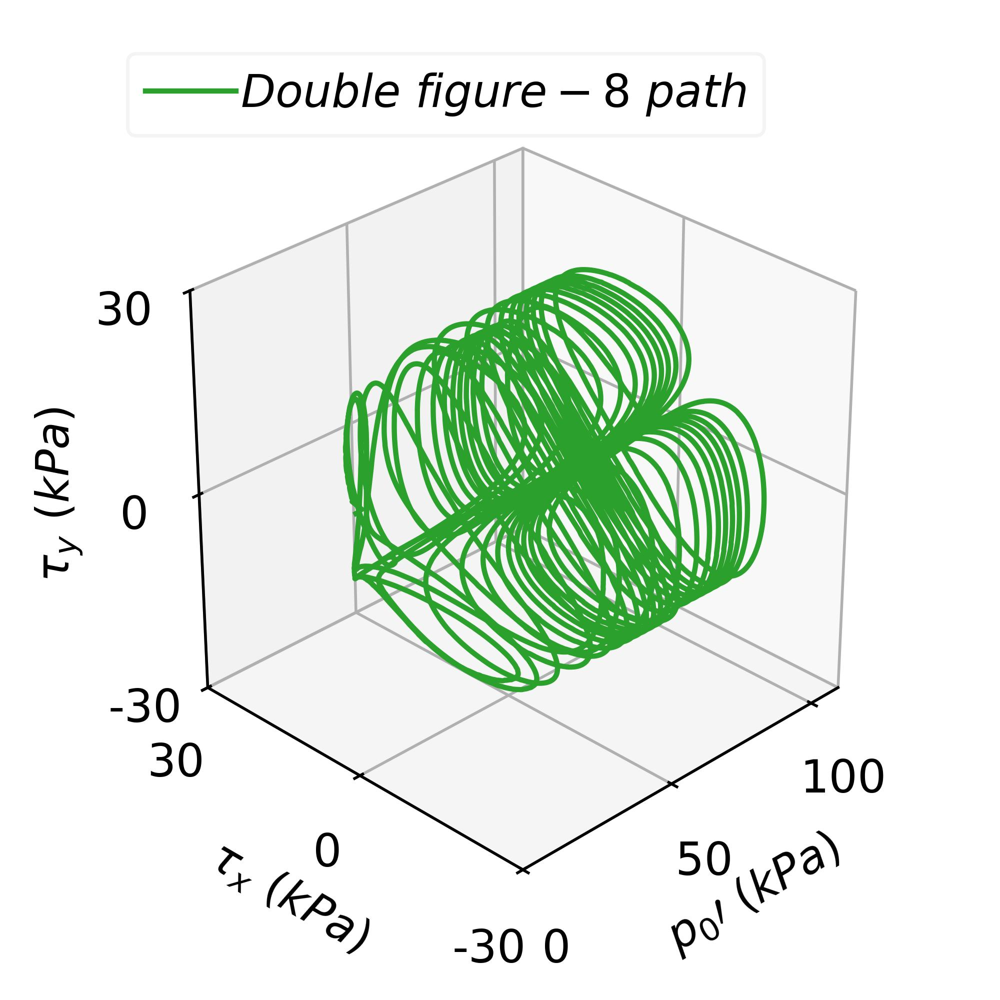

Single-8 Double-8
Specimen deformation and interparticle force
Single-8 Double-8
Specimen deformation and interparticle force
This chapter describes the characteristics of fabric evolution of sand soil by conducting a series of drained true triaxial shear tests using DEM. The difference in fabric under general stress conditions inspired and motivated the study on its influence on liquefaction resistance.
This chapter introduces an innovative DEM simulation method of the hollow cylindrical apparatus (HCA). This algorithm simultaneously replicates undrained and stress conditions using a combined-servo-mechanism.
With the proposed method, specimens with the same p under different horizontal to vertical stress ratio K0 were subjected to different cyclic shear stress ratios, and typical stress-strain relationships observed in laboratory test were reproduced. The effects of K0 on liquefaction resistance were studied from both macroscopic and microscopic perspectives.
 Contact force and particle displacement in HCA  K0 effects on liquefaction
The purpose of this chapter is to validate the results obtained in chapter 2 by providing experimental evidence. The effects of K0 and preparation protocols, including the stress paths in consolidation stage, are discussed.
Experiment DataBesides the anisotropy of soil, directionality of seismic loading also matters in liquefaction analyses. This chapter examines the multi-directional effects on liquefaction resistance. These effects are quantitatively studied by applying different loading paths while maintaining the magitudes of shear stress.
 Stress path in unidirectional and multidirectional loading   Single-8 Double-8 Shear and mean effective stress evolution
This chapter demonstrates the implementation of high-performance computing (HPC) in DEM using TaichiLang. This repository includes a basic linear contact model and a simple cuboidal boundary, with plans to incorporate additional contact models.
 An example of generating a slope using taichiDEM
An example of generating a slope using taichiDEM
Utilizing a visualization software such as Paraview is not strictly necessary. Offline rendering can accurately capture pixels in DEM scenes featuring spherical objects, including effects like reflection and refraction. TaichiLang offers efficient GPU interaction, facilitating rapid development of high-performance renderers.